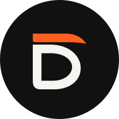

Brand identity · v1
David Ibáñez — D / Cap
La gorra va baja y ajustada, justo por encima de las gafas. Por eso la D es plana arriba y la visera, corta y caída hacia delante, se apoya casi pegada a la letra.
De frente, tu cabeza es redonda y ancha de mejillas. La panza de la D es llena y amplia, no una D estrecha de imprenta.
El trazo tiene el mismo grosor en todo el contorno y la curva es continua y llena, como la línea de la cara y la barba. Así es una D sólida, legible y tranquila, sin perder el carácter de la cabeza.
Las fotos son blanco y negro con grandes masas negras (gorra, barba, chaqueta). El isotipo es macizo y de un solo color, con el naranja solo en la visera.
Lockups
El descriptor funciona igual en EN y ES: Design & Development. Así el logo no cambia entre idiomas: solo cambia el contenido de la web.
Aplicaciones


Avatar · GitHub, LinkedIn, DribbbleColor & type
acento · fondos y formas
texto y enlaces sobre claro
Blanco y negro de alto contraste, como tus fotos, con un único acento naranja para la visera, los enlaces y los detalles de interacción. #FF5F1F llega a 6,2:1 sobre negro, pero solo a 2,8:1 sobre blanco roto; para texto sobre fondo claro se usa #C2410C (4,7:1, cumple AA). Tipografía: Plus Jakarta Sans para el nombre y los textos y JetBrains Mono para el rol (el guiño al código).